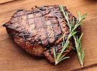

Steak

Description
Ipso etc
Ingredients
- Butter
- Aromatic herbs
- Steak
Steps
- Heat pan, melt butter
- Start timer, add Steak
- After 2 mins, add herbs
- After 1 more min, flip Steak
- Periodically spoon melted butter over Steak top
- After 3 more mins (six total), remove Steak from pan
- Rest for 1 min, cut off fat if desired, serve
- Steak. Done.